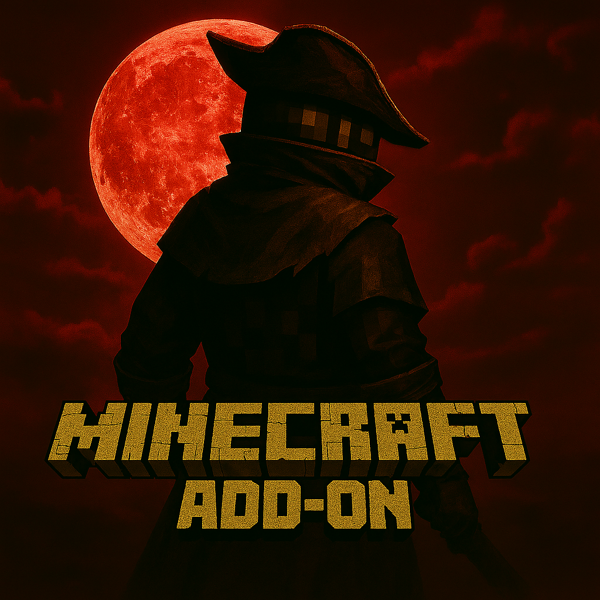

元になった作品「Bloodborne」
「かねて血を恐れたまえー」
"Bloodborne"は2015年3月26日、PlayStation4で発売された、From SoftwareとSIEジャパンスタジオによるアクションRPGです。奇病「獣の病」が蔓延する古都ヤーナム。数多くの、救われぬ病み人たちが、この町の医療行為を求め、長旅の末ヤーナムを訪れる。主人公もまた、そうした病み人の一人であった…
このゲームの未知の探索、バトルの死闘感は他には代え難いものです。強大な獣、未知の存在、血に酔った狩人…そんな素晴らしいゲーム、それがBloodborneです。
Bloodborne再現アドオンについて
Minecraftでこの作品を再現したいと思ったのが、このアドオンを制作するきっかけです。元々アドオンを導入して遊ぶだけだったのが、簡単なアイテムを作ってみるようになり…
そんなタイミングで、この神ゲーに遭遇いました。最初こそ拙く簡単なものでしたが、数多くの反響を頂けて、本格的なアドオン開発へと踏み切ることになりました。
一人で制作している分、進捗は遅く、まだまだ完成までは程遠いですが、今後も鋭意開発を進めていこうと思っているので、応援していただけるとありがたいです…！！
スクリーンショット
バグ報告・要望
これまではアドオンを配布しているサイト、クラフターズコロニ―さんのコメントにて直接対応していたのですが、数が多く対応する前に忘れてしまうことがあったため、 今後は忘れないように、報告や要望などはこちらのページにてまとめておこうと思います。
こちらのフォームからご連絡ください。